Featured Portfolio
- All
- GenAI / Agentic AI
- Data Engineering
- Machine Learning
- Natural Language Processing
- Exploratory Data Analysis
- Visualization
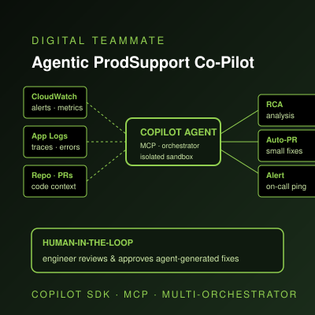
Agentic AI Digital Teammate — Production Support Co-Pilot
Autonomous "digital team member" augmenting on-call engineers. Built on the GitHub Copilot Agent SDK and hosted as an MCP-enabled agent, orchestrated through a multi-orchestrator framework that spins up isolated, ephemeral compute sandboxes per incident — copying logs & code, performing root-cause analysis, ingesting CloudWatch / agentic log streams, generating fixes for low-risk bugs, and opening human-in-the-loop pull requests so the team can scale support coverage with engineers in control.
Agentic AI Digital Teammate — ProdSupport Co-Pilot

Enterprise NLQ-to-SQL Conversational Analytics
LLM-powered natural-language interface that lets business users query enterprise data in plain English — translating intent into governed SQL across the unified data platform with semantic-layer awareness, lineage, and guardrails.
NLQ-to-SQL Conversational Analytics

AI Studio — LLM-Powered UI Mock Generator
GenAI-driven interface integrated with the Unified Data Product Platform that turns product requirements into interactive web prototypes — accelerating discovery for Product Owners & UX Designers.
AI Studio — UI Mock Generation
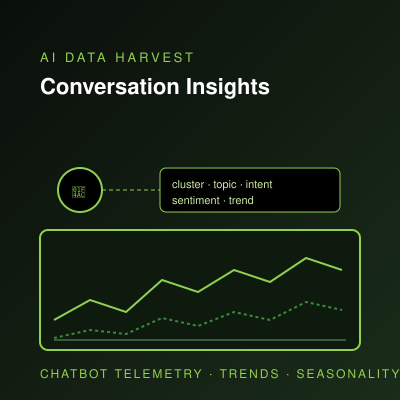
AI Data Harvest Insights
AI-driven analytics over dealer-facing chatbot interactions — surfacing intent clusters, sentiment, seasonality, and conversation patterns to drive measurable business decisions.
AI Data Harvest Insights
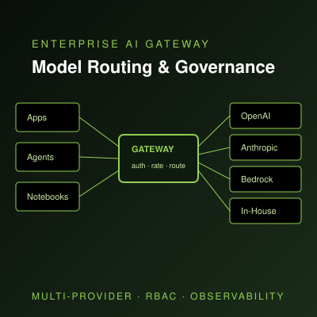
Enterprise AI Gateway & Model Routing
Contributing to provider integrations, model registration patterns, scalable rate limiting, RBAC, governance workflows, and operational maturity of the Enterprise AI Gateway — the front door for all internal LLM traffic.
Enterprise AI Gateway & Model Routing
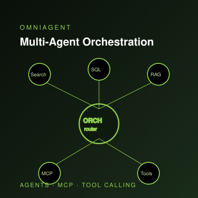
Agentic AI / OmniAgent Multi-Agent Orchestration
Reusable patterns for managing multiple AI agents, MCP tools, integrations, governance controls, and discoverability across enterprise teams — standardizing how teams build, register, and operate agentic experiences.
Agentic AI / Multi-Agent Orchestration

LLM Batch Tracing & Cost Optimization
Enterprise-wide LLM batch-file tracing solution that reduced LLM usage cost by ~50%. Includes AI observability, prompt/response monitoring, evaluations, and chargeback-ready usage telemetry.
LLM Observability & Cost Optimization
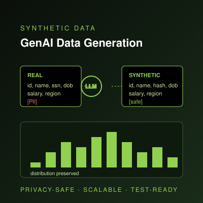
GenAI Synthetic Data Generation
Generative-AI synthetic data generation embedded in the Enterprise Universal Data Platform — preserving statistical distributions while removing PII, enabling safe model development & testing at scale.
GenAI Synthetic Data Generation
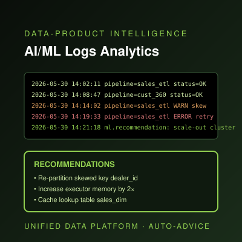
AI/ML Data-Product Logs Analytics & Recommendations
AI/ML-driven analytics over data-product logs in the Enterprise Universal Data Platform — auto-detecting failures, skew, and SLA risk, and recommending concrete remediations to data-product teams.
AI/ML Logs Analytics & Auto-Recommendations
Unified Data Platform (UDP) — Full-Stack Delivery
End-to-end full-stack delivery of the Enterprise Unified Data Platform — React + TypeScript SPA (side-nav, Data Details, Classification, MFE integration), Node.js / Python Dataset APIs (auto S3-path validation, Dataset v1 details), CI/CD setup, and a GenAI synthetic-data service on DynamoDB with ~5 ms response. UI hardening across performance, errors, and resilience.
Unified Data Platform — Full-Stack
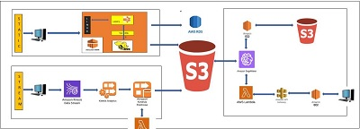
Enterprise Data Lake (EDL) — Cost & Performance Optimization
Vacuum cleanup of ~7 PB; Grant Job rearchitected from 1.9 hr → 16 min (eliminated ~500K redundant ACL calls); View Management alter-not-drop redesign cutting 200 → 50–200 DBU/hr; EDL tables-tracking coverage scaled 25K → 160K with a DLT pipeline. Unity Catalog migration, Databricks E1 → E2, and ECS modernization for the Dataset service & Scala metastore.
EDL Cost & Performance Optimization
MLOps / LLMOps Modernization on Databricks
Modernized enterprise MLOps/LLMOps end-to-end on Databricks — AWS → Databricks POCs, MLflow + non-MLflow registration paths, YAML-driven model registration, deployment templates, evaluation harnesses, Datadog APM + LLM tracing, and Unity Catalog governance — cutting time from experiment to production deployment.
MLOps / LLMOps Modernization
DeereAI Streaming Optimization
Redesigned the DeereAI streaming ingestion path — end-to-end latency reduced from ~9 hr to ~1 hr, with ~10× throughput improvement.
DeereAI Streaming Optimization
GOV UI — Full-Stack with Generate-AI Documentation
Full-stack delivery of the Governance UI — Generate-AI documentation feature, dynamic DocumentDB & Elasticsearch integration with <8 s response, Okta SSO hardening, and coverage across 200+ tables/views.
GOV UI — Full-Stack
Winter Hackathon — OpenAI Batch API ($1M+ Savings)
Production batch-tracing pattern using the OpenAI Batch API — delivered ~$1M+ in annualized LLM-cost savings across enterprise workloads. Recognized at the John Deere Winter Hackathon.
Hackathon — LLM Cost Savings
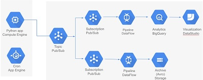
Develop & Implement Bigquery Cloud data lake solution for Google ADH data
.
.
Google Cloud Data Projects
1) Design, Develop & Implement a Enterprise Cloud data lake platform in AWS for Data Science & DWH system
2) Implement & develop solutions for Netezza-Obsolescence(AWS Redshift migration)
Amazon cloud Services Data Projects
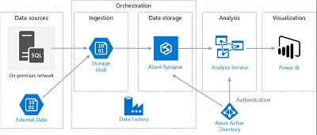
1) Design, Develop & implement the multitenant Reporting system in Azure Cloud
2) Migrate & Implement Legacy web reporting solutions to the Advance cloud Reporting tool
Azure cloud Data Projects
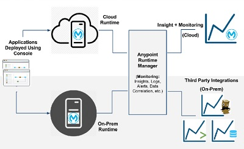
1) Implement & develop API-Led enterprise Real-time data integration solutions
2) Implement & develop Stream Data flow for Operational Business Reports
Real Time Data Integration Projects
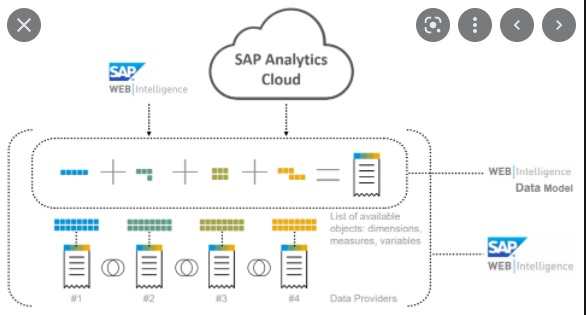
1) Legacy-Cloud data integration solutions
2) SAP BODS To Informatica Migration
3) SAP HANA Virtual Data Modeling and Reporting solution implementation
4) Develop ETL , MDM, pipelines by using Informatica, DataStage, Abinitio ETL tools
SAP HANA Modeling, ELT & ETL Projects
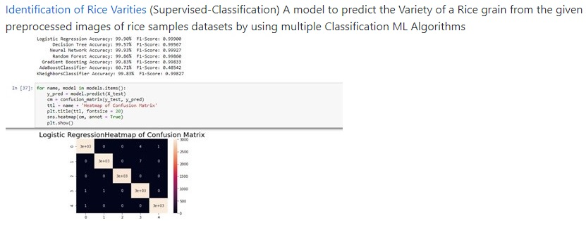
Identification of Rice Varities (Supervised-Classification)
Academic Project
A model to predict the Variety of a Rice grain from the given preprocessed images of rice samples datasets by using multiple Classification ML Algorithms
Identification of Rice Varities
Forecast Health Insurance Claims (Supervised-Regression)
Academic Project
A model to Analyze a health insurance company's data to predict future insurance claim amounts and identify factors that lead to higher healthcare costs
.
Forecast Health Insurance Claims
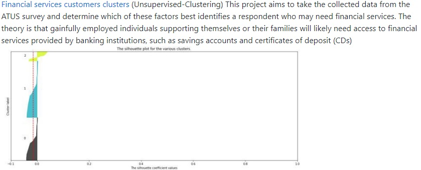
Financial services customers clusters (Unsupervised-Clustering)
Academic Project
This project aims to take the collected data from the ATUS survey and determine which of these factors best identifies a respondent who may need financial services.
Financial Services Clusters
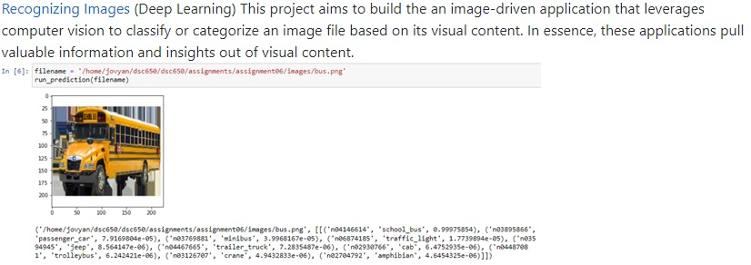
Recognizing Images (Deep Learning)
Academic Project
This project aims to build the an image-driven application that leverages computer vision to classify or categorize an image file based on its visual content.
.
Recognizing Images
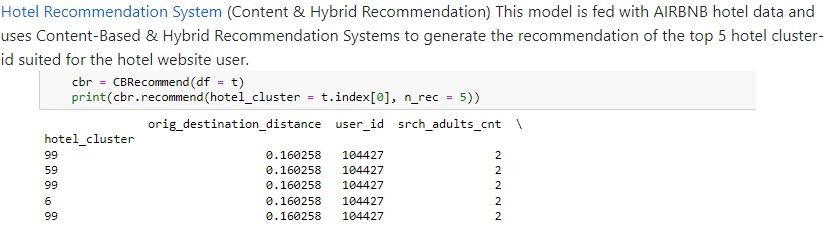
Hotel Recommendation System (Content & Hybrid Recommendation)
Academic Project
This model is fed with AIRBNB hotel data and uses Content-Based & Hybrid Recommendation Systems to generate the recommendation of the top 5 hotel cluster-id suited for the hotel website user
.
Hotel Recommendation System
Academic Project
Detect Autistics disease among the toddlers This model uses ASD Pre-Screening traits data as input and helps health care professionals to predict accurately the possibility of ASD disease among toddlers.
Detect Autistics Disease
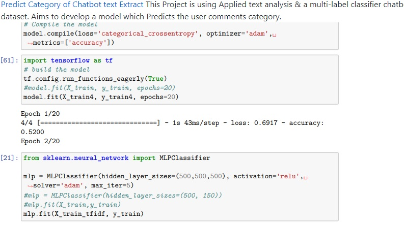
Academic Project
Predict Category of Chatbot text Extract (NLP) This Project is using Applied text analysis & a multi-label classifier chatbot dataset. Aims to develop a model which Predicts the user comments category.
Predict Category of Chatbot Text
Perform EDA (R Programing)
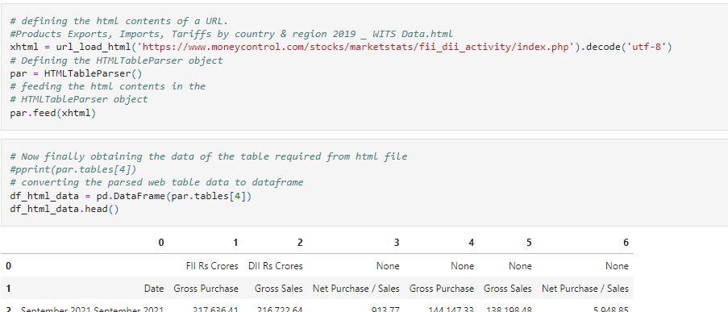
Academic Project
Perform Data Wrangling on API,WebScrapping,File (Python)
.